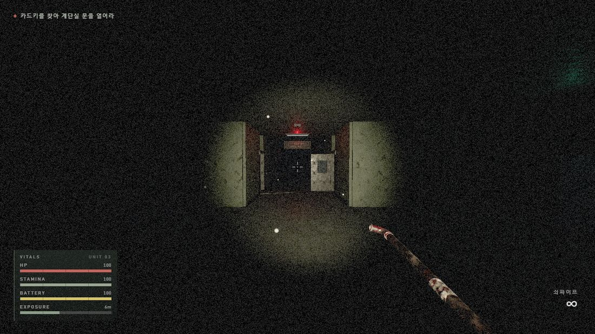
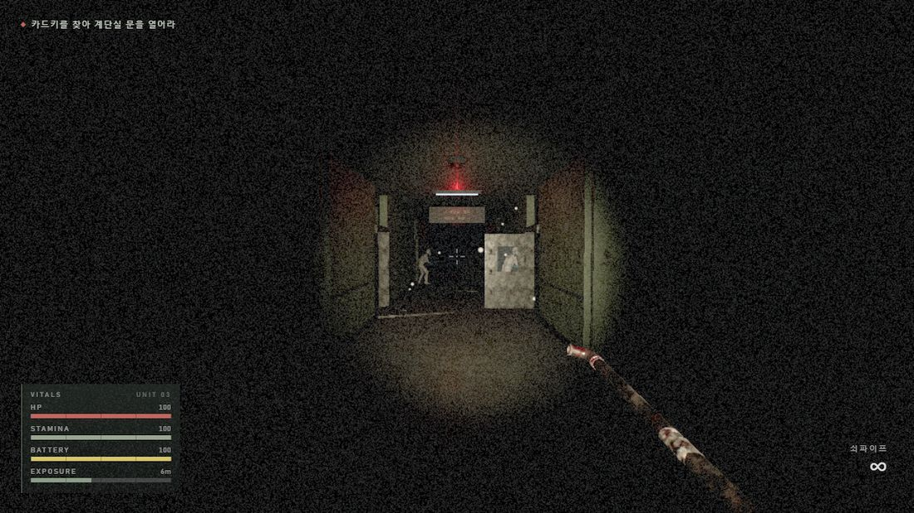
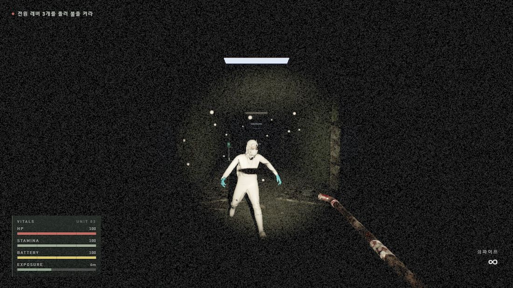
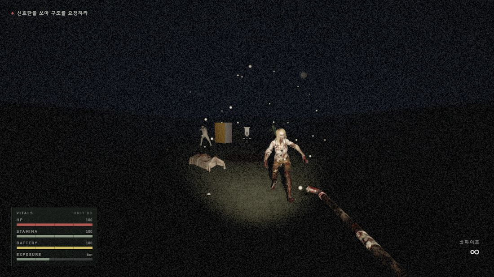
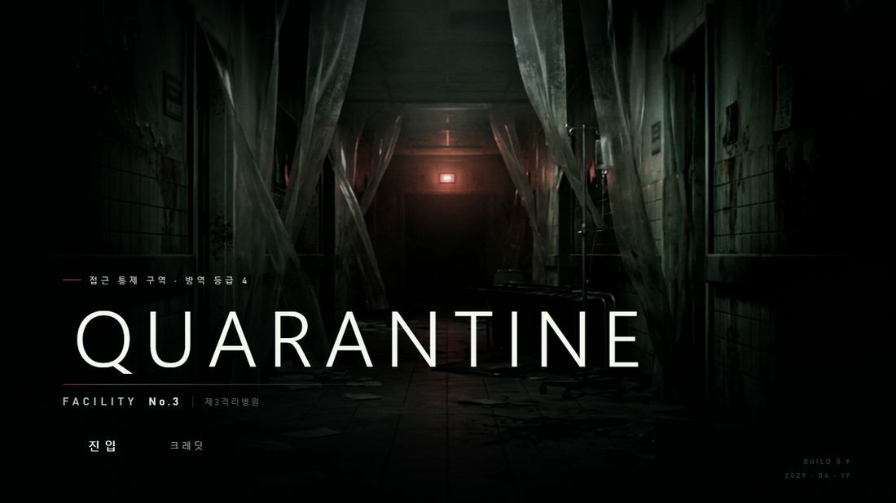

정전된 격리병원에 갇힌 조사요원이 손전등 하나에 의지해 지하로 내려가 전원을 복구하고, 병동을 거슬러 올라 옥상에서 구조받는 1인칭 서바이벌 호러.
| 플레이 (빌드) | https://yunseok-map.github.io/zombie_games/ |
| 전체 소스 | https://github.com/yunseok-map/zombie_games |
| 플레이 영상 | [제출 전 YouTube 링크를 여기에 채운다 — 30~60초] |
| 장르 | 1인칭 서바이벌 호러 |
| 플랫폼 | 웹 (Three.js + Vite). 설치·플러그인 없이 브라우저에서 실행 |
| 플레이 시간 | 1회 12~18분 (5개 구역 · 엔딩까지) |
| 핵심 감정 | 무력함 → 잠깐의 안도 → 다시 무력함 |
| 공포의 재료 | 어둠 · 소리 · 정적. 과도한 신체 훼손 묘사를 목표로 하지 않는다 |
2029년, 원인 불명의 감염이 확산되어 국가가 격리시설을 지정했다. 제3격리병원은 그중 하나였고, 수용 인원이 한계를 넘은 지 나흘째 통신이 끊겼다. 플레이어는 시설 조사를 위해 투입된 요원이며, 진입 직후 정전으로 출입구가 잠긴다.




다섯 구역을 순서대로 돌파해 옥상에서 구조 헬기를 타는 것이 최종 목표다. 각 구역에는 통과 조건이 되는 사건이 하나씩 있고, 그 사건을 해결하는 행동이 곧 소음을 만들어 좀비를 부른다. 진행과 위험이 같은 행동에 묶여 있는 것이 이 게임의 규칙이다.
| 구역 | 무대 | 해야 하는 일 |
|---|---|---|
| 1F | 격리병동 — 복도와 병실 | 카드키를 찾아 잠긴 계단실 문을 연다 |
| B1 | 영안실·기계실 — 완전 암흑 | 전원 레버 3개를 올린다 → 점등 직후 대규모 웨이브 |
| 2F | 병동 — 점멸 조명, 커튼이 시야를 끊는다 | 무전기 4대를 켠다 (켤 때마다 소음 → 웨이브) |
| 3F | 수술부·중환자실 — 좁음이 공포다 | 무영등 2개에 전원을 넣어 봉쇄문을 푼다 |
| 옥상 | 천장 없는 야외 · 헬리패드 | 신호탄을 쏘고 90초를 버틴다 → 헬기 도착 |
| 이동 | WASD 이동 · SHIFT 달리기 · CTRL 앉기 |
| 전투 | 마우스 좌 공격 · R 재장전 · 1 2 무기 전환 |
| 그 밖 | F 손전등 · E 상호작용/수색 · ESC 일시정지 |
| 위급 | 좀비에게 붙잡히면 SPACE 를 연타해 뿌리친다 (가만히 있으면 절대 안 풀린다) |
서류함 · 구급상자 · 자판기 · 사물함에 E 를 대면 뒤질 수 있다. 이 게임에 상점이나 자동 회복은 없다. 배터리 · 붕대 · 9mm 탄약은 오직 수색에서만 나온다.
| 나오는 것 | 확률(가중치) | 효과 |
|---|---|---|
| 손전등 배터리 | 40 | +35% — 가장 흔하다. 그래도 계속 모자란다 |
| 붕대 | 18 | 체력 +25 |
| 9mm 탄약 | 26 | +10발 |
| 헛수고 | 30 | 아무것도 없다 |
넷 중 하나는 일부러 비워 두었다. 확실히 나온다면 뒤지는 것은 그냥 절차가 된다. 게다가 뒤지는 소리는 반경 12m 까지 들린다 — 뒤에서 뭔가 다가오는 동안에도 서랍을 계속 열지 말지가 매번 선택이 된다.
체력이 깎이면 게이지만 줄지 않는다. 몸이 말을 안 듣기 시작한다. 화면에서 즉시 알아볼 수 있게 만든 것이 이 게임의 원칙이라, 부상은 걷는 모양으로 드러난다.
| 상태 | 이동 속도 | 근접 위력 | 화면에서 보이는 것 |
|---|---|---|---|
| 정상 | 100% | 100% | — |
| 부상 (체력 50% 미만) | 74% | 70% | 절뚝인다 — 한쪽 발에서만 시야가 더 깊게 꺼지고 몸이 기운다 |
| 중상 (25% 미만) | 56% | 45% | 절뚝임이 심해지고 조준이 크게 흔들린다. 20% 아래로는 달릴 수 없다 |
구역을 넘어가도 회복되지 않는다. 체력도 배터리도 그대로 다음 구역으로 넘어간다. 1층에서 아낀 것이 옥상에서의 90초를 결정한다. 다만 체력이 35% 아래로 떨어지면 스폰 압력이 자동으로 45% 줄어든다 — 좌절해서 그만두는 것보다는 낫다고 판단했다.
체력과 공격력만 다른 것이 아니라, 각자 다른 감각으로 플레이어를 찾는다. 그래서 “어떻게 들켰는가”가 매번 다르고, 대처도 달라진다.
| 종류 | 어떻게 찾는가 | 무엇이 위험한가 | 대처 |
|---|---|---|---|
| 배회체 | 눈 18m (시야각 100°) · 귀 12m | 어슬렁거리다 발견하면 4배 속도로 달려든다. 그 낙차가 이 게임의 리듬이다 | 느리게 돈다 — 옆으로 돌아 지나갈 수 있다 |
| 청각체 | 눈이 없다. 귀만 26m | 가장 빠르고, 붙으면 거의 즉시 때린다. 손전등을 꺼도 소용없다 | 앉아서 천천히 움직이는 것 외에 방법이 없다 |
| 포복체 | 눈 13m · 귀 16m | 낮아서 늦게 보인다. 손전등은 앞을 비추지 바닥을 비추지 않는다. 느린 대신 한 대가 아프다 | 회전이 가장 느리다 — 뒤로 빠지면 따돌릴 수 있다 |
| 비대체 | 눈 14m · 귀 14m | 체력 180(배회체의 3배). 사거리 2m 로 길고 한 방이 가장 세다 | 크게 휘두르는 예비 동작 0.5초가 있다 — 보고 피할 수 있게 만든 값이다 |
좀비를 정해진 자리에 미리 놓아 두지 않았다. 긴장도라는 값이 실시간으로 오르내리고, 그 값이 지금 몇 마리가 살아 있어야 하는지를 정한다. 같은 구역을 두 번 걸어도 같지 않다.
| 단계 | 동시 활성 | 스폰 간격 | 플레이어가 느끼는 것 |
|---|---|---|---|
| BUILDUP | 4마리 | 2.6초 | 하나둘 늘어난다. “슬슬 많아지는데” |
| PEAK | 12마리 | 0.7초 | 사방에서 온다. 뒤로 물러나는 것 말고 답이 없다 |
| RELIEF | 1마리 | — | 14초간 아무도 오지 않는다. 이 침묵이 다음 PEAK 를 무섭게 만든다 |
난이도를 숫자로 올리는 대신, 플레이어가 매 순간 손해를 감수하고 선택하게 만들었다.

| 브라우저 | Chrome / Edge 최신 버전 (WebGL2) |
| 해상도 | 1920×1080 기준으로 만들었다. 창 크기에 맞춰 자동 조정된다 |
| 그래픽 | 내장 그래픽에서도 60fps 로 돌아간다 — 프레임이 예산을 넘으면 해상도를 스스로 낮춘다(적응형 해상도). 심사자의 PC 를 고를 수 없기 때문에 넣었다 |
| 회선 | 빌드 18.8MB. 10Mbps 회선에서 첫 로딩 약 11초, 50Mbps 에서 약 3초 |
| 좌하단 계기판 | 체력 · 스태미나 · 배터리 · 노출도. 위험할 때 맥동하고, 방금 깎인 체력이 잔상으로 남는다 |
| 좌상단 | 지금 해야 할 일. 진행에 따라 갱신된다 (예: “무전기 2/4”) |
| 중앙 | 조준점. 맞히면 히트마커가 튀고, 헤드샷은 노랗게, 처치하면 붉게 번진다 |
| 우하단 | 든 무기와 남은 탄약. 비면 재장전 안내가 맥동한다 |
| 화면 가장자리 | 맞은 방향이 붉게 물든다. 체력이 낮으면 가장자리가 심장 박동으로 뛴다 |
| 개발 | 1인 개발 (개인 참여) — 기획 · 구현 · 에셋 파이프라인 · QA |
| 기술 | Three.js (WebGL2) · Vite · 순수 JavaScript. 게임 엔진을 쓰지 않았다 |
| 규모 | 소스 31개 파일 · 9,237줄 · 커밋 100개 · 에셋 변환 스크립트 21개 |
| AI 활용 | 제출물 4번 「AI 활용 기술 문서」에 도구 · 프롬프트 · 판단 근거 · 외부 에셋 출처를 전부 정리해 두었다 |
| 외부 에셋 | Sketchfab 모델(CC BY 4.0) · ambientCG 텍스처(CC0) · Kenney(CC0). 표기 의무가 있는 자산의 제작자는 게임 내 크레딧 화면과 제출물 4번에 모두 기재했다 |
5일 만에 만든 1인 웹 게임이라 분량은 짧다. 대신 “왜 이 숫자인가”를 전부 재고 정했다. 옥상 90초에 필요한 피해량과 한 판에 모을 수 있는 탄약을 산술로 비교해 밸런스를 뒤집었고, 좀비 걷기 클립은 원래 이동 속도를 실측해 두 개를 탈락시켰고, 화질 옵션은 하나씩 켜 보고 비용을 재서 취사했다. 그 과정과 근거 수치는 제출물 4번에 그대로 남겼다.
QUARANTINE No.3 (제3격리병원) · NHN GAME × AI HACKATHON (NAN 2026) 사전 과제 제출물 3번
문서 최종 수정 2026-08-08